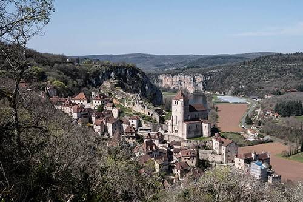

Cirque de
Saint-Cirq-
Lapopie


⟹ Plus Beau Village de France ⟸
Perché à cent mètres au-dessus de la rivière Lot, sur un éperon rocheux qui dessine un véritable cirque de falaises, le site de Saint-Cirq-Lapopie a vraisemblablement tenté les hommes dès l'époque gallo-romaine. Sa position défensive exceptionnelle en a fait, tout au long du Moyen Âge, un point stratégique disputé sur la route reliant le Quercy à l'Agenais.

Les maisons qui composent aujourd'hui le village datent pour l'essentiel du XIIe au XVe siècle, période durant laquelle se sont succédé trois châteaux dont il ne reste que des vestiges au sommet du rocher. Marchands, chaudronniers, peaussiers et tourneurs sur bois y ont façonné, ruelle après ruelle, l'identité artisanale du bourg.
Au XXe siècle, c'est un autre type de conquête qui s'est joué ici : celle des artistes. En 1950, le poète surréaliste André Breton découvre le village et en fait sa résidence d'été, déclarant avec emphase avoir « cessé de se désirer ailleurs ». D'autres peintres et écrivains suivront, contribuant à faire du village une étape incontournable de la création contemporaine.
Cette reconnaissance s'est traduite par une série de distinctions : classement parmi les Plus Beaux Villages de France, statut de Grand Site, et élection au titre de « Village préféré des Français » en 2012, lors de l'émission animée par Stéphane Bern.
Saint-Cirq-Lapopie fut longtemps un bourg d’artisans autant qu’une place forte. Les rues et les maisons conservent la mémoire de métiers liés aux ressources locales et aux échanges de la vallée : tourneurs sur bois, peaussiers, chaudronniers et autres artisans travaillaient derrière les échoppes ouvertes sur les ruelles. Cette activité explique en partie l’organisation très dense du village, où habitat, atelier et boutique pouvaient se côtoyer dans un même bâtiment.
La rivière Lot complétait ce réseau économique. En contrebas, elle constituait une voie de circulation essentielle pour les marchandises, avant que la route et le chemin de fer ne prennent progressivement le relais.
À Bouziès, en aval du village, le chemin de halage offre un témoignage spectaculaire de l’ancienne navigation commerciale. Une partie du passage fut taillée dans la falaise au XIXe siècle afin de permettre la remontée des gabares lorsque le courant empêchait de progresser à la voile. Hommes ou animaux de trait tiraient alors les embarcations depuis la rive.
Le parcours est aujourd’hui célèbre pour le long bas-relief sculpté dans la paroi par Daniel Monnier, évocation contemporaine de la rivière, de sa faune, de sa flore et de ses fossiles. Il relie ainsi patrimoine fluvial, géologie et création artistique.
Le belvédère de Bancourel et les hauteurs du causse permettent de comprendre pourquoi Saint-Cirq-Lapopie s’est installé ici. L’érosion du Lot a isolé un promontoire calcaire naturellement défensif, tandis que les couches rocheuses du causse racontent une histoire beaucoup plus ancienne, lorsque cette partie du Quercy était recouverte par des mers jurassiques.
Cette lecture du paysage s’inscrit dans le Géoparc mondial UNESCO des Causses du Quercy, qui valorise autour de Saint-Cirq-Lapopie plusieurs géosites et itinéraires d’interprétation.
Le cirque de falaises qui enserre Saint-Cirq-Lapopie résulte du même travail d'érosion qui a façonné toute la vallée du Lot : l'encaissement progressif de la rivière dans les couches calcaires du causse de Limogne a créé cet éperon rocheux quasiment imprenable, choisi très tôt par les hommes pour sa position défensive.
Le village s'inscrit aujourd'hui dans le Parc naturel régional des Causses du Quercy, labellisé Géoparc mondial de l'UNESCO, dont il constitue l'une des portes d'entrée les plus visitées, à quelques kilomètres seulement de la grotte ornée du Pech Merle et de ses peintures rupestres vieilles de près de 24 000 ans.
Cette proximité entre patrimoine géologique et patrimoine bâti n'est pas un hasard : c'est la même roche calcaire qui a offert aux hommes préhistoriques leurs abris ornés et aux bâtisseurs médiévaux les pierres de construction de leurs maisons et de leurs remparts.
Sur-fréquentation estivale : classé parmi les sites les plus visités de la région, le village doit gérer un afflux touristique important en juillet et août, avec un impact sur les ruelles étroites et le stationnement.
Fragilité du bâti ancien : l'ensemble du village étant classé Monument Historique, chaque restauration de façade ou de toiture obéit à des règles strictes de conservation du patrimoine.
Érosion de la falaise : comme sur l'ensemble de la vallée, le calcaire reste soumis aux phénomènes naturels d'érosion et de chute de blocs, surveillés par les services compétents.
Équilibre entre vie locale et tourisme : avec environ 200 habitants permanents, le village veille à préserver une vie de village authentique au-delà de la seule saison touristique.
Deux points de vue se complètent pour apprécier pleinement le site : la vue plongeante depuis le haut du village, et la vue d'ensemble depuis la vallée.
Le parking P5, en surplomb, offre une vue d'en haut sur les toits du village et sur le méandre que dessine le Lot en contrebas.
La porte de la Pélissaria, en bas du village, permet au contraire de photographier Saint-Cirq-Lapopie dans son intégralité, accroché à sa falaise.
Le chemin de halage de Bouziès offre une perspective depuis la rivière elle-même, à pied ou lors d'une croisière commentée entre Bouziès et Saint-Cirq-Lapopie.
Des visites guidées du village et de son patrimoine sont proposées les mardis matin en juillet et août, ainsi que pendant les vacances scolaires.